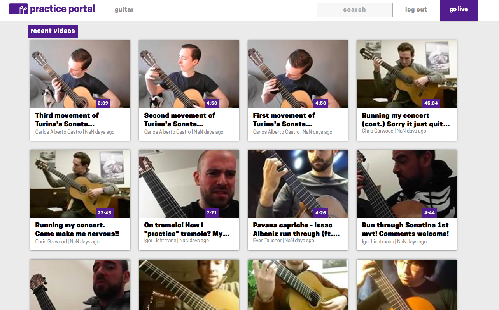

I'm a developer and designer based in Boston, MA.
In January 2017, I worked on developing a working proof-of-concept prototype for an early stage start up called Practice Portal. The goal of the company was to show how music masters practice so that people learning new instruments had a guide on what to do, and how masters became masters. Since a community of people existed already on Facebook that live streamed their practice sessions, my job was to siphon that community into a working prototype to see if it would be something people would want to use off Facebook. I used Angular, Node, MongoDB, Heroku, and the Facebook API to create the website. Users can browse all recent videos, select a certain instrument they would like to see practice videos of, search by author or title of the videos, and see all existing comments from the live streams. Since this prototype was more proof-of-concept than a full working app, commenting and uploading the videos still happens on Facebook, and the comments and videos are pulled in via the API after the user authenticates their account. The prototype is no longer live, but you can find screenshots below and my github repo here.
